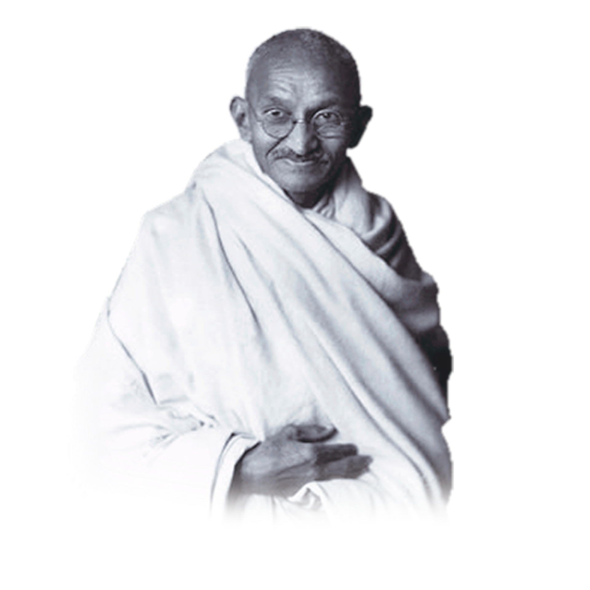

Mahatma Gandhi
A peaceful leader
Summary of Gandhi's Journey
October 2, 1869
Birth of Mohandas Karamchand Gandhi
September 4, 1888
Gandhi leaves for England to study law.
October 1899
Outbreak of Boer War (1899-1901) in South Africa. Gandhi organizes an ambulance corps for the British.
Gandhi returns to India to attend the Indian National Congress. G.K. Gokhale introduces him to nationalist leaders.
July 31, 1907
The Boer Republic Transvaal, now under the control of the British, attempts to register all Indians as members; Gandhi and others refuse to register. Their resistance efforts mark the first use of nonviolent non-cooperation by the Indian minority in South Africa, soon calledsatyagraha, or "soul-force."
January 11, 1908
Gandhi is arrested and sentenced to two months in prison.
August 15, 1947:
Indian independence becomes official, as does the partition into two countries, India and Pakistan.
August-December 1948
India dissolves into chaos and killings, as Hindus and Muslims flee for the borders of India and Pakistan.
January 30, 1948
Gandhi is assassinated by Nathuram Vinayuk Godse, a Hindu nationalist.